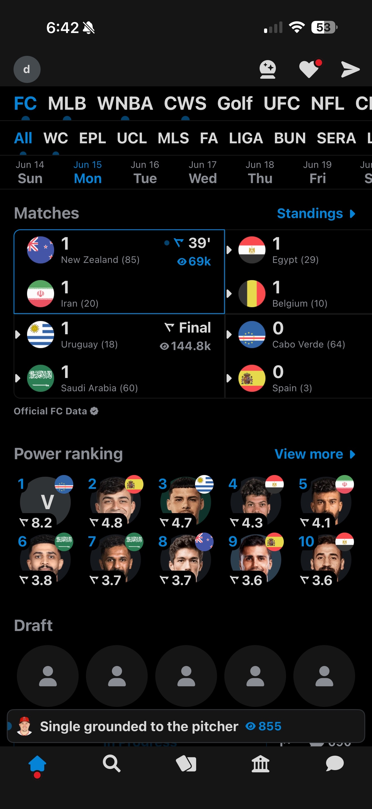
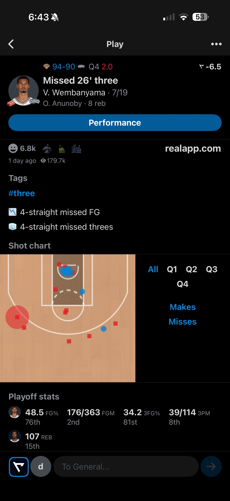
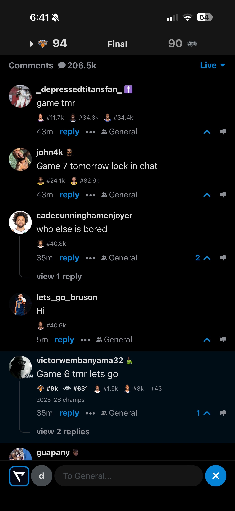

An unsolicited redesign of three core screens. Same design system, type, and brand. No rebrand. Each change fixes one specific point of friction while watching a live game. Every "after" below is a working mockup, not a flat image.

The scores you came for sit behind two long rows of text tabs. Switching sports means scrolling plain labels: slow to scan, easy to overshoot. And the World Cup is buried mid-scroll.

The play is here, but the player's stats for the game are not. A big Performance button dominates the screen and still sends you elsewhere for points, rebounds, assists.

Opening comments feels like leaving the game. Chat takes the full screen, and the exit is a close button stranded bottom-right, where no one looks for back.